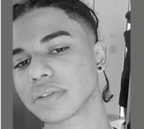

{kind=link}
{kind=link}
{kind=link}
{kind=link}
{kind=link}
{kind=link}
{kind=link}
{kind=link}
{kind=link}
Nosso compromisso também é com o social.
Todas as obras vendidas terão a renda revertida para projetos que auxiliam pessoas em situação de vulnerabilidade, na cidade de São Paulo, em meio a pandemia da Covid-19.
PROJETO FOTOGRÁFICO
CO.CHAMP e o
NE(G)ACIONISMO
O grupo CO.CHAMP nasceu do anseio em manifestar ideias e reflexões acerca do momento individual e coletivo vivido mundialmente. Desse modo, acreditamos que não há isenção de ações e não há como se calar diante de um Brasil tragicômico.
Para a estreia, o grupo apresenta "NE(G)ACIONISMO", projeto fotográfico realizado para o curso de Multimídia da ETEC Jornalista Roberto Marinho.
The CO.CHAMP group was born from the desire to express ideas and reflections about the individual and collective moment experienced worldwide. Thus, we believe that there is no exemption from actions and there is no way to remain silent in the face of a tragicomic Brazil. For the debut, the group presents "NE(G)ACIONISMO", a photographic project carried out for the Multimedia course at ETEC Journalist Roberto Marinho.
PROJETO
O projeto “Negacionismo” foi concebido para o Interdisciplinar do curso de Multimídia, do primeiro semestre de 2021, com o objetivo de criar um ensaio fotográfico e um site sobre um movimento artístico escolhido pela equipe. Em meio à pandemia, e a dificuldade de encontros presenciais , o desafio foi pensar em um trabalho autoral de excelência diante das limitações que tínhamos para a execução.
O movimento escolhido: Arte Conceitual e o artista referência: Cildo Meireles.
A partir disso, nos debruçamos nas principais referências para alinhar qual seria a principal mensagem que gostaríamos de transmitir. O desejo era vivenciar o movimento, utilizando tais “limitações” ao nosso favor, fazendo com que o conceitual , as experiências individuais e coletivas fossem a inspiração para o nosso ensaio fotográfico. Através destes ideais, o projeto se configurou da seguinte forma: Uso de recursos imagéticos para execução das obras/ instalações com viés à crítica política e social. Realização do ensaio fotográfico , a partir de criações de obras, com recursos próprios, estúdio caseiro e/ou ambiente externo (rua).
CONCEITO
O conceito do projeto transita entre assuntos sobre o momento atual, o passado , o real e o irreal. Todo o mundo vivencia, com a pandemia, uma instabilidade sanitária e, no caso do Brasil, as dificuldades trafegam também entre o político e o social. O projeto foi estruturado a partir da perspectiva da “NEGAÇÃO”. Deste modo, o trabalho completo percorre a temática do “Negacionismo: A Alma do Humano e da Década” e , a partir disso, são explorados os subtemas/séries abaixo:
- Negacionismo Político: Visão Global / Alienação
- Negacionismo da Dor: Luto
- Negacionismo Social: Desigualdade
- Negacionismo da Liberdade: Quarentena
- Negacionismo e o Fim: Esperança
PALETA
Paleta com cores neutras. O amarelo é a única cor quente, sendo utilizado para destaque em pontos estratégicos.
MARCEL DUCHAMP
Um dos grandes percursores da arte conceitual, Duchamp foi a inspiração para a criação do nome do grupo e da nossa logo.
CILDO MEIRELES (1948)
Artista brasileiro de destaque, suas obras foram referência para o grupo no processo criativo para a realização do projeto.
- Foto: Everton Billardin
SOBRE NÓS
Somos estudantes do primeiro semestre do curso de Multimídia da ETEC Jornalista Roberto Marinho.
Hudson Patrick (São Paulo, 1999)
Cintia Amorim (São Paulo, 1999)
@cintiiaamorim
Leandro Severiano (São Paulo, 1991)
@leandroseveriano
Vânia Almeida (São Paulo, 1987)
@vania.almeida1

Yan Neves (São Paulo, 2005)
@_yoru197
LOJA
Esta é a área do nosso site em que você pode adquirir nossos produtos e fazer parte do nosso movimento, afinal somos uma loja, mas não queremos “apenas” vender (Veja nossa campanha).
Lançaremos, a cada mês, uma arte digital e um cartão postal, totalizando 10. As artes podem ser colecionáveis ou enviados para onde quiser. Trata-se de um manifesto pela memória e pelo não esquecimento dos fatos.
Para adquirir entre em contato conosco através do nosso e-mail: grupo.cochamp@gmail.com
FOTOGRAFIA
FOTOGRAFIAS DIGITAIS: Adquira nossas artes, em alta resolução, para imprimir, colocar na parede ou espalhar por aí como uma forma de protesto.
(Por favor, mantenha os créditos de autoria).
CARTÃO POSTAL
Cartões-postais surgiram como uma forma de recordar lugares que visitamos e/ou presentear pessoas. Queremos que a memória jamais seja apagada e que nunca esqueçamos o quão difícil está sendo cada minuto da pandemia no Brasil e no mundo.
Adquira o seu!